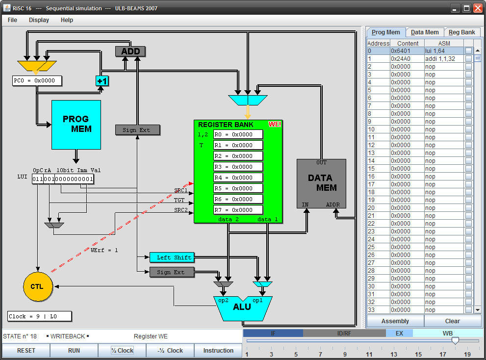

RiSC16 Simulators - Help
Help Index
RiSC16 Visual Simulator (Sequential Implementation)
├ Sequence of events
├ Interface Description
├ Control Panel
└ Menu
The interface can be divided into three areas:
- The bottom area contains controls to drive the simulator
- The main area shows the elements of the RiSC16. Further information about these elements can be found in the “RiSC-seq” document of Prof Jacob.
- The right area allows viewing and editing the memories and the bank register. The last column of the program memory tab is used to place breakpoint. After editing the program memory, it is necessary to click the “Assembly” button before the changes are taken into account.

Help Index
RiSC16 Visual Simulator (Sequential Implementation)
├ Sequence of events
├ Interface Description
├ Control Panel
└ Menu